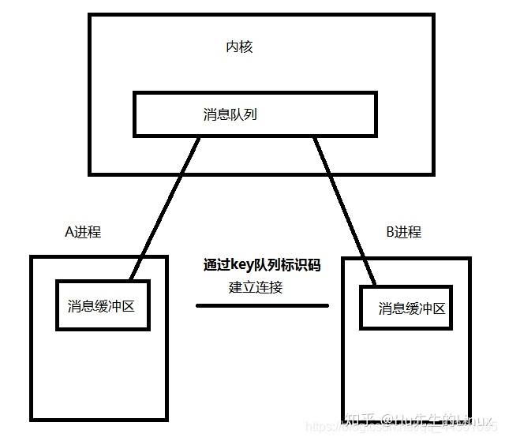

面经整理/操作系统（part 1）
# 操作系统(Part 1)
什么是操作系统？
操作系统是一种软件，具有以下的功能： 1. 屏蔽硬件，为用户和其他软件提供接口。 2. 管理资源，合理的分配和调度资源。
什么是用户态和内核态？
- 在用户态下，CPU只能受限的访问内存，并且不允许访问外围设备，用户态下的 CPU 不允许独占，也就是说 CPU 能够被其他程序获取。
- 在内核态下，CPU可以访问任意的数据，允许访问外围设备，处于内核态的 CPU 可以从一个程序切换到另外一个程序，并且占用CPU不会发生抢占情况，一般处于特权级0的状态我们称之为内核态。
用户态和内核态是如何切换的？
从用户态到内核态切换可以通过三种方式： 1. 系统调用（软中断）。 2. 外设中断（硬中断）。 2. 异常。如果当前进程运行在用户态，这时候发生了异常事件就会触发切换。
请分别简单说一说进程和线程以及它们的区别。
进程：进程是资源分配与调度的基本单位，具有一定独立功能的程序的一次实例。
线程：线程是程序执行的基本单位。线程自己基本上不拥有系统资源，只拥有一点在运行中必不可少的资源(如程序计数器,一组寄存器和栈)，它可与同属一个进程的其他的线程共享进程所拥有的全部资源。 区别： 1. 进程是资源分配的基本单位；线程是程序执行的基本单位。 2. 进程拥有自己的资源空间，没启动一个进程，系统就会为它分配地址空间；而线程与CPU资源分配无关，多个线程共享同一进程内的资源，使用相同的地址空间。 3. 一个进程可以包含若干个线程。
进程的通信方式有哪些？
- 管道：
- 匿名管道（pipe）：fork产生的子进程会继承父进程对应的文件描述符。利用这个特性，父进程先pipe创建管道之后，子进程也会得到同一个管道的读写文件描述符。从而实现了父子两个进程使用一个管道完成半双工通信。
- 命名管道（fifo）：命名管道在底层的实现跟匿名管道完全一致，区别只是命名管道会有一个全局可见的文件名以供其他进程使用。
- 匿名管道（pipe）：fork产生的子进程会继承父进程对应的文件描述符。利用这个特性，父进程先pipe创建管道之后，子进程也会得到同一个管道的读写文件描述符。从而实现了父子两个进程使用一个管道完成半双工通信。
- 消息队列（message）：
- 消息队列传递的数据具有某种结构，而不是简单的字节流。
- 消息队列的本质其实是一个内核提供的链表。

- 消息队列传递的数据具有某种结构，而不是简单的字节流。
- 共享内存（shared memory）：
- 共享内存在各种进程间通信方式中具有最高的效率。
- 共享内存允许两个或更多进程访问同一块内存，就如同 malloc() 函数向不同进程返回了指向同一个物理内存区域的指针。当一个进程改变了这块地址中的内容的时候，其它进程都会察觉到这个更改。
- 使用共享内存要注意的是多个进程之间对一个给定存储区访问的互斥。若一个进程正在向共享内存区写数据，则在它做完这一步操作前，别的进程不应当去读、写这些数据。
- 共享内存在各种进程间通信方式中具有最高的效率。
- 信号量：
- 信号量是解决互斥共享资源的同步问题而引入的机制。
- socket：
- socket是基于TCP或UDP协议实现的。流套接字将TCP作为其端对端协议，提供了一个可信赖的字节流服务。数据报套接字使用UDP协议，提供数据打包发送服务。